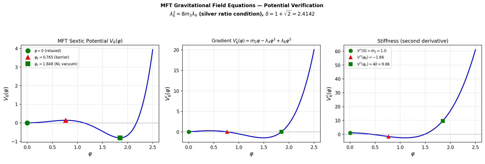
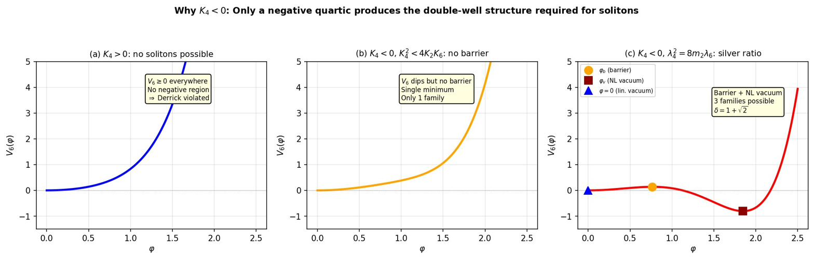
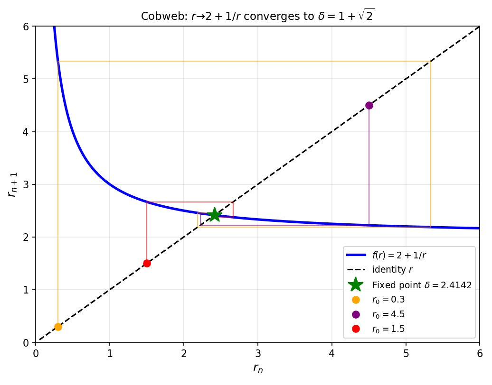
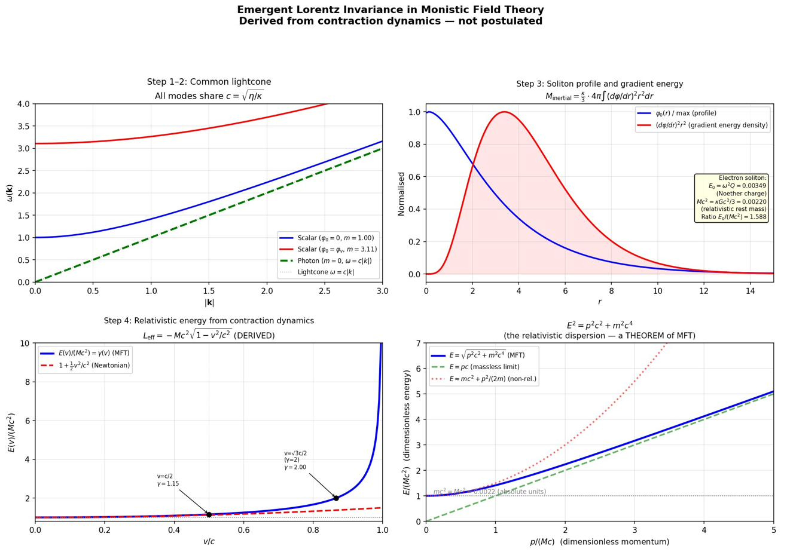

Foundations
The structural base of MFT: the gravitational action, the derived signs of the potential, the Symmetric Back-Reaction theorem that forces the silver ratio, the complete benchmark action, and the step-by-step derivation of emergent Lorentz invariance and $E = mc^2$.
Papers covered
P0 (Gravitational Field Equations) · P1 (Why $K_4 < 0$) · P2 (Symmetric Back-Reaction) · P9 (Flagship: monistic principle, benchmark action, parameter ledger, emergent Lorentz invariance).
1. The monistic principle P9
Monistic Field Theory rests on a single ontological claim:
Matter and space are not separate entities. What we call "matter" is space in a state of localised contraction.
The contraction field $\varphi(\mathbf{x})$ measures how strongly the medium is contracted at each point. Where the medium is contracted, the effective spatial geometry changes, and other solitons follow geodesics of this deformed geometry. Electromagnetic fields are directional distortions (polarisation modes) of the same medium.
On the nature of time
MFT is formulated on a three-dimensional spatial manifold $\Sigma$ with metric $h_{ij}$. There is no fundamental time coordinate. Physical history is an ordered sequence of spatial configurations indexed by an ordering parameter $\tau$ that labels successive configurations but carries no direct physical meaning. Any smooth reparameterisation $\tau \mapsto f(\tau)$ leaves the theory invariant. What we experience as "time" emerges from the dynamics of the contraction field: the rate at which configurations change along $\tau$ depends on the local contraction.
This is what makes Lorentz invariance and $E = mc^2$ derived rather than postulated: there is no spacetime metric to be Lorentz-invariant in the fundamental theory. The Minkowski structure emerges only when localised contraction patterns (solitons) are set in motion through the medium. We derive this in §6 below.
Conceptual trap: Do not read MFT as "Brans–Dicke with a sextic potential." The mathematical structure is similar, but the physical interpretation is fundamentally different. The scalar field $\varphi$ is not a fifth-force mediator alongside matter — it is matter. There is no separate substance.
2. The MFT gravitational action P0
Let $\Sigma$ be a three-dimensional spatial slice with 3-metric $h_{ij}$, compatible covariant derivative $D_i$, and 3D Ricci scalar $R^{(3)}[h]$. The MFT gravitational action on $\Sigma$ is:
The four ingredients are: a non-minimal coupling $F(\varphi)$ between the contraction field and the spatial curvature; an elastic-stiffness gradient term with $\kappa > 0$; the sextic self-interaction potential $V_6(\varphi)$; and matter and gauge field contributions $\mathcal{L}_{\text{matter}}$.
The sextic potential
The quadratic term provides a linear restoring force, the negative quartic creates an attractive nonlinearity (the double-well barrier), and the positive sextic provides the elastic ceiling. The potential has its minimum at $\varphi = 0$ (the relaxed vacuum), a barrier at $\varphi_b$, and a nonlinear vacuum at $\varphi_v$, where:
A barrier exists if and only if $\lambda_4^2 > 4 m_2 \lambda_6$.

Field equations
Varying the action with respect to the 3-metric $h^{ij}$ yields the modified Einstein equation:
where $G^{(3)}_{ij} = R^{(3)}_{ij} - \tfrac{1}{2} h_{ij} R^{(3)}$ is the 3D Einstein tensor and the contraction-field stress tensor is:
Varying with respect to $\varphi$ yields the contraction field equation:
The right-hand side contains the potential gradient (restoring force, attractive nonlinearity, elastic ceiling) and the curvature coupling through $F'(\varphi)\, R^{(3)}$. This curvature coupling is what generates the Symmetric Back-Reaction theorem of §4.
P0: Gravitational Field Equations (Zenodo) → · mft_grav_verification.py
3. The signs are forced P1: Why $K_4 < 0$
With the action established, the next question is which signs the potential coefficients must have. P1 derives all four sign constraints from elementary physical requirements. There are no choices.
$\lambda_6 > 0$: energy bounded below
As $\varphi \to \infty$, the sextic term dominates: $V_6(\varphi) \approx \lambda_6\varphi^6/6$. If $\lambda_6 \le 0$, the energy functional is unbounded from below and no stable soliton exists. Therefore $\lambda_6 > 0$.
$m_2 > 0$: localisation
At large $r$, the soliton profile decays to vacuum. Linearising the field equation around $\varphi = 0$ gives $\kappa\, \nabla^2 \varphi = m_2\, \varphi$. For $\varphi(r)$ to decay exponentially as $\varphi \propto e^{-\sqrt{m_2/\kappa}\,r}$, we need $m_2 > 0$. If $m_2 \le 0$ solutions are oscillatory or growing at infinity — neither is normalisable.
$\lambda_4 > 0$: Derrick's theorem (the central result)
This is the non-trivial sign. The proof uses Derrick's theorem extended to Q-ball configurations. Given a Q-ball solution $\varphi(r)$, consider the one-parameter family of spatially dilated configurations:
Under this rescaling, $\nabla\varphi_\mu = (1/\mu)(\nabla\varphi)(\mathbf{r}/\mu)$ and $d^3x \to \mu^3\, d^3x'$. The Q-ball energy of the rescaled configuration is:
For $\varphi(r)$ to be a physical soliton, it must be stationary under spatial dilations. Setting $dE_Q/d\mu|_{\mu=1} = 0$:
Since $T_{\text{grad}} > 0$ (gradient energy is always positive), the potential energy must be negative on the soliton support. With $m_2 > 0, \lambda_4 \ge 0, \lambda_6 > 0$, every term in $V_6(\varphi)$ is non-negative, so $V_6(\varphi) \ge 0$ everywhere and $W_{\text{pot}} \ge 0$. This contradicts the virial requirement.
Therefore $\lambda_4 > 0$ (i.e., $K_4 < 0$): the quartic must be attractive. The answer to "why $K_4 < 0$?" is: because particles exist in three dimensions.
$\lambda_4^2 > 4 m_2 \lambda_6$: barrier existence
Required for the discriminant in $\varphi_b^2, \varphi_v^2$ to be positive, i.e., for the two non-trivial critical points to exist as real solutions. Without this inequality the potential has no double-well structure.

4. The ratio is forced — Symmetric Back-Reaction P2
Three of the four potential parameters can be absorbed by rescaling $\varphi$ and the energy. One physically meaningful ratio remains: $\lambda_4/\lambda_6$ (or equivalently $\rho = \lambda_4^2/(m_2\lambda_6)$). P2 proves this ratio is uniquely determined by self-consistency of the action.
The back-reaction problem
The contraction field equation contains the curvature coupling $-F'(\varphi)\, R^{(3)}$. Near a critical point $\varphi_c$ where $V_6'(\varphi_c) = 0$, the curvature $R^{(3)}$ is sourced by the energy density at $\varphi_c$, which is proportional to $V(\varphi_c)$. The resulting field shift is:
Define the back-reaction amplitude:
The potential has three critical points. The relaxed vacuum has $V(0) = 0$, so $\Sigma(0) = 0$ trivially. The non-trivial question concerns the relation between $\Sigma(\varphi_b)$ and $\Sigma(\varphi_v)$.
If $\Sigma(\varphi_b) \ne \Sigma(\varphi_v)$, the back-reaction preferentially shifts one critical point relative to the other. The barrier migrates, the double-well topology changes, and the three-family structure is disrupted. For self-consistency under the action's own gravitational back-reaction:
Algebraic proof
At any critical point where $V'(\varphi_c) = 0$, eliminate $m_2$ via $m_2 = \lambda_4\varphi_c^2 - \lambda_6\varphi_c^4$:
Introduce the dimensionless variable $t = \lambda_6\varphi_c^2/\lambda_4$. Then $\varphi_c^2 = t\, \lambda_4/\lambda_6$ and the back-reaction amplitude becomes:
The two critical points satisfy the quadratic $m_2/\lambda_6 - (\lambda_4/\lambda_6)\varphi^2 + \varphi^4 = 0$, which in $t$-variables gives Vieta sum $t_b + t_v = 1$ and Vieta product $t_b \cdot t_v = m_2\lambda_6/\lambda_4^2$. Setting $\Sigma(\varphi_b) = \Sigma(\varphi_v)$, the prefactor $\lambda_4/\lambda_6$ cancels. Both $t_b, t_v$ then satisfy
for some constant $K$. Rearranging: $t^2 - (3/4 - 6K) t - 3K = 0$. By Vieta:
Comparing with the original Vieta product $t_b \cdot t_v = m_2\lambda_6/\lambda_4^2$:
In normalised units ($m_2 = 1$): $\lambda_4/\lambda_6 = 4$. The universal back-reaction amplitude follows: $\Sigma(\varphi_b) = \Sigma(\varphi_v) = -1/12$.
The silver ratio as the unique attractor
With $\lambda_4^2 = 8 m_2 \lambda_6$, the critical points are $\varphi_b^2 = 2 - \sqrt{2}$, $\varphi_v^2 = 2 + \sqrt{2}$, and the field ratio is:
The silver ratio. Equivalently, the back-reaction map acts on $r$ as:
The unique positive fixed point of this map satisfies $r^* = 2 + 1/r^*$, i.e., $(r^*)^2 - 2r^* - 1 = 0$, giving $r^* = 1 + \sqrt{2} = \delta$. The map is a contraction on $(0, \infty)$ and converges globally to $\delta$ from any positive starting value.

The extended theorem: deriving $F(\varphi)$
The standard theorem treats $F'(\varphi)$ as constant (linearised). The extended theorem determines the functional form of $F(\varphi)$ itself. When $F$ is non-linear, the back-reaction displacement acquires a local coupling factor:
Since the standard theorem already gives $\Sigma(\varphi_b) = \Sigma(\varphi_v) = -1/12$, the extended condition reduces to:
The Master-to-Gravitational mapping relates the potential across scales by a continuous rescaling parameter $\alpha$, mapping critical points to $\alpha\varphi_b, \alpha\varphi_v$. The silver-ratio condition is preserved for all $\alpha$. For the back-reaction to be symmetric at every rescaling simultaneously, the condition must hold at $(\alpha\varphi_b, \alpha\varphi_v)$ for all $\alpha > 0$ — an infinite family of constraints requiring $d(\ln F)/d\varphi$ to take the same value at every pair of critical-point images. The unique solution:
where $F_0 = 1/(16\pi G_0)$ and $\beta \approx 1.016 \times 10^{-4}$ is constrained from galactic rotation curves and cross-validated by the neutrino mass formula to $1.6\%$.
P2: Derivation of $\lambda_4/\lambda_6 = 4$ (Zenodo) → · mft_lambda_ratio_derivation.py · mft_F_derivation.py · interactive visualizer
5. Fourteen silver-ratio manifestations P9
The silver ratio is the organising constant of MFT. It appears in 14 independent manifestations across MFT physics. They are not independent curiosities — they are algebraic consequences of the single equation $\lambda_4^2 = 8 m_2 \lambda_6$ applied to different properties of the same potential.
| # | Ratio | Value | Num. | Meaning | Sector |
|---|---|---|---|---|---|
| $\delta^{-2}$ | |||||
| 2 | $V(\varphi_b)/|V(\varphi_v)|$ | $1/\delta^2$ | 0.172 | Energy asymmetry | All |
| $\delta^{-1}$ | |||||
| 5 | $V(\varphi_b)$ | $1/(3\delta)$ | 0.138 | Barrier height | Hadrons, $\nu$ |
| $\delta^0 = \sqrt{2}$ | |||||
| 7 | $(\varphi_v - \varphi_b)/\varphi_b$ | $\sqrt{2}$ | 1.414 | Phase-space width | All |
| 8 | $\Delta V = 0$ crossing | $\sqrt{2}$ | 1.414 | Fluctuation operator | Spin |
| 9 | $\varphi_b \cdot \varphi_v$ | $\sqrt{2}$ | 1.414 | Geom. mean of crit. pts | All |
| $\delta^1$ | |||||
| 1 | $\varphi_v/\varphi_b$ | $\delta$ | 2.414 | Field amplitude ratio | All |
| 3 | $V''(\varphi_v)/V''(0)$ | $4\delta$ | 9.657 | Stiffness ratio | Leptons, bosons |
| 6 | $|V(\varphi_v)|$ | $\delta/3$ | 0.805 | Vacuum depth | All |
| 10 | $r \mapsto 2 + 1/r$ | fixed pt $\delta$ | — | Gravitational attractor | Origin |
| 11 | $f_\pi^2$ | $\delta$ | 2.414 | Pion decay const. (0.03%) | Hadrons |
| 12 | $e$ (Skyrme) | $2\delta$ | 4.83 | Skyrme coupling (cand., 6%) | Hadrons |
| $\delta(\delta+2)$ | |||||
| 13 | $V''(\varphi_v) + V''(0)$ | $\delta(\delta+2)$ | 10.66 | Neutrino screening mass | Neutrinos |
| $\delta^2$ | |||||
| 4 | $|V''(\varphi_v)/V''(\varphi_b)|$ | $\delta^2$ | 5.828 | Nonlin. vac / barrier stiffness | Compact obj. |
| $\delta^4$ | |||||
| 14 | $\Delta m^2_{32}/\Delta m^2_{21}$ | $\delta^4 - 1$ | 32.97 | Neutrino hierarchy (1.2%) | Neutrinos |
Curvature algebra
The stiffnesses at the three critical points form a closed algebraic system:
Two identities follow from the master relation $\delta - 1/\delta = 2$:
The geometric mean of the absolute curvatures is $\sqrt{4\delta \cdot 4/\delta} = 4 = \lambda_4/\lambda_6$: the potential ratio that generates the silver ratio reappears as the geometric mean of its own curvatures.
Conceptual trap: The silver ratio is not numerology. It is the algebraic fixed point of a dynamical equation (the back-reaction map). Every manifestation is a provable consequence of the single condition $\lambda_4^2 = 8 m_2 \lambda_6$. If you change the ratio, all 14 manifestations break simultaneously.
What the silver ratio does not control
The sector Coulomb couplings $Z_{\text{lep}} = 1$, $Z_{\text{boson}} = 9/5$, and $Z_{\text{down}} = 2$ are rational numbers. They arise from the potential coefficients ($m^2$, $\lambda_4/(2\lambda_6)$) and the medium's tensor structure in $d = 3$ dimensions ($9/(9-4)$), not from the silver ratio. The sector couplings reflect how different particle types couple to the medium; the silver ratio controls what the medium looks like. Both are structural properties of the same elastic medium with different algebraic origins. The Z values are derived in detail on the Particles page.
6. The benchmark action P9
The structural action of §2 contains functions ($F$, $\varepsilon$, etc.) whose forms must be specified to compute anything. The complete benchmark realisation consistent with all published MFT results is:
What each block does
Gravity + contraction: $F(\varphi) = (1+\beta\varphi)/(16\pi G_0)$ is the linearised non-minimal coupling (the full exponential $F_0 e^{\beta\varphi}$ is derived in §4). The kinetic term $\kappa(\nabla\varphi)^2/2$ is standard. $V_6(\varphi)$ is the derived sextic potential. The quartic-gradient operator $K_4(\nabla\varphi)^4/(4\Lambda^4)$ is a permitted higher-derivative correction included for completeness; it is not required by any published MFT prediction.
Electromagnetism: $F_{ij} = \partial_i A_j - \partial_j A_i$ is the field strength. The dielectric function $\varepsilon(\varphi)$ is constrained at the two vacua: $\varepsilon(0) = 1$ by vacuum normalisation, and $\varepsilon(\varphi_v) = 1$ to $0.03\%$ precision from $f_\pi^2 = V''(\varphi_v)/4 = \delta$. The simplest function consistent with both points is $\varepsilon(\varphi) = 1$ everywhere, which is the working hypothesis. Under this, the contraction field couples to electromagnetism only through the gravitational sector $F(\varphi)$.
Electroweak polarisation: $\mathcal{L}_{\text{EW,pol}}$ contains $SU(2)$ gauge fields $W_i^a$ and $U(1)$ field $B_i$ with contraction-dependent stiffness functions $Z_W(\varphi), Z_B(\varphi)$ and mass functions $m_W(\varphi), m_Z(\varphi)$.
Hadronic Skyrme sector: $\mathcal{L}_{\text{Skyrme}} = f_\pi^2(\lambda_4, \lambda_6)\, \text{Tr}(\partial_i U \partial_i U^\dagger)/16 + [\text{Skyrme term}]/(32 e^2(\lambda_4, \lambda_6))$. The pion decay constant is closed by the chiral-stiffness relation $f_\pi^2 = V''(\varphi_v)/4 = \delta$ at $0.03\%$ accuracy. The Skyrme coupling $e \approx 4.53$ is extracted from the converged $B = 1$ hedgehog soliton via rotational quantisation of $M_N$ and $M_\Delta$.
Matter: $\mathcal{L}_f = Z_f(\varphi)\, \bar\psi_f\, i\gamma^i D_i \psi_f - Y_f(\varphi, h)\, \bar\psi_f \psi_f$ for each fermion species $f$.
7. The parameter ledger P9
The Standard Model has $\sim 20$–$25$ free parameters. MFT operates with two MFT-specific inputs: the gravitational coupling $\beta$ and the energy calibration $m_e$. ($G_0$ is the standard bare Newton constant, shared with General Relativity, not specifically MFT.)
| Symbol | Meaning | Status | Set by |
|---|---|---|---|
| $G_0$ | Bare Newton constant | Input (standard) | Observation (shared with GR) |
| $\beta$ | Grav. coupling to $\varphi$ | Input ($1.016 \times 10^{-4}$) | Galactic fits (P5) |
| $m_e$ | Electron mass (calibration) | Input (0.511 MeV) | Calibration |
| Derived from above | |||
| $F(\varphi)$ | Non-minimal coupling | Derived | $F_0 e^{\beta\varphi}$ (P2) |
| $m_2, \lambda_4, \lambda_6$ | Potential parameters | Derived | $\lambda_4^2 = 8 m_2 \lambda_6$ (P2) |
| $K_4 < 0$ sign | Quartic sign | Derived | Derrick (P1) |
| $\varphi_b, \varphi_v$ | Critical points | Derived | From $V_6'(\varphi) = 0$ |
| $\delta$ | Silver ratio | Derived | $\varphi_v/\varphi_b = 1+\sqrt{2}$ |
| $\kappa$ | Gradient stiffness | Normalised to 1 | Convention |
| $\varepsilon(\varphi)$ | Dielectric function | Constrained | $\varepsilon(0) = \varepsilon(\varphi_v) = 1$ (P8) |
| $m_\mu/m_e$ | Muon ratio | Predicted (1.2%) | Q-ball (P4) |
| $m_\tau/m_\mu$ | Tau ratio | Predicted (0.4%) | Q-ball (P4) |
| $m_W, m_Z, m_H$ | Boson masses | Predicted ($<$0.2%) | Q-ball (P4) |
| $\sin^2\theta_W$ | Weinberg angle | Predicted (0.4%) | Q-ball (P4) |
| $f_\pi$ | Pion decay constant | Derived (0.03%) | $f_\pi^2 = \delta$ (P8) |
| $Z_{\text{lep}}$ | Lepton coupling | Derived ($= 1$) | $V''(0)$ (P8) |
| $Z_{\text{down}}$ | Down-quark coupling | Derived ($= 2$) | $\lambda_4/(2\lambda_6)$ (P8) |
| $Z_{\text{boson}}$ | Boson coupling | Conjectured ($= 9/5$) | SO(3) mode counting (P8) |
| $\Delta m^2_{32}/\Delta m^2_{21}$ | Neutrino hierarchy | Predicted (1.2%) | $\delta^4 - 1$ (P8) |
| $m_{\nu_2}, m_{\nu_3}$ | Neutrino masses | Derived ($\sim$6%) | 1-loop + $\delta(\delta+2)$ (P8) |
Everything below the line is derived or constrained by the theory.
8. Emergent Lorentz invariance and $E = mc^2$ P9
Lorentz invariance in MFT is not imposed. It is derived from the contraction dynamics of the elastic medium in five steps. There is no fundamental spacetime metric in the theory — the Minkowski structure emerges only when localised contraction patterns (solitons) are set in motion.
Step 1: Quadratic action and dispersion relation
Around a rest soliton $\varphi_0(r)$ in a screened background, expand the MFT action to quadratic order in perturbations $\delta\varphi$:
where $\kappa_\varphi$ and $\eta_\varphi$ are effective coefficients from the background. The dispersion relation:
Step 2: Common lightcone across all sectors
Electromagnetic waves (directional contraction modes) propagate with effective speed $v_\gamma = \sqrt{\eta_{\text{EM}}/\kappa_{\text{EM}}}$. By construction of the MFT action:
All low-energy excitations — scalar contraction, electromagnetic, and soliton modes — share the same lightcone. The universality of $c$ is a derived property of the medium, not an independent postulate.
Step 3: Moving soliton and the relativistic Lagrangian
A localised soliton profile $\varphi_0(\mathbf{r})$ determines two independent energy-like quantities. The first is the Noether rest energy $E_0 = \omega^2 Q$, where $Q = \int u^2\, dr$ is the conserved charge of the soliton's internal $U(1)$-like phase symmetry $\Phi \mapsto e^{i\alpha}\Phi$; $E_0$ is the energy of the static configuration. The second is the inertial mass:
which is the coefficient of $\tfrac{1}{2}\dot{\mathbf{X}}^2$ in the low-velocity expansion of the effective point-particle Lagrangian below. These two quantities are physically distinct, and in general $E_0 \ne Mc^2$: their ratio depends on the potential structure and the Coulomb binding. The quantity that plays the role of "mass" in the relativistic kinematics — the $m$ appearing in $E = mc^2$ and $E^2 = p^2c^2 + m^2c^4$ — is $M$, not $E_0$.
Promote the soliton's centre of mass to a collective coordinate:
Substituting into the action and expanding to all orders in $\dot{\mathbf{X}}/c$ yields an effective point-particle Lagrangian that is Lorentz-covariant by construction — it is what the Lorentz-invariant MFT action reduces to under rigid translation of a localised profile:
This is the standard relativistic Lagrangian for a massive particle. It emerges from the contraction dynamics of the medium, not from a postulate about spacetime geometry. The corresponding energy and momentum:
giving the relativistic energy–momentum relation:
Step 4: Mass–energy equivalence
The collective-coordinate Lagrangian is invariant under translations of the evolution parameter $\tau$. Noether's theorem applied to this $\tau$-translation symmetry gives the conserved energy:
Evaluating at $\mathbf{X} = \mathbf{0}, \dot{\mathbf{X}} = \mathbf{0}$ gives the rest-frame value:
This is the mass–energy equivalence relation. It is not postulated; it is the rest-frame limit of the Noether energy of the Lorentz-covariant effective Lagrangian, which was itself derived by substituting a translating soliton ansatz into the MFT action. The "$m$" in $E = mc^2$ is the inertial mass $M$ — the coefficient of $\tfrac{1}{2}\dot{\mathbf{X}}^2$ in the non-relativistic expansion of $L_{\text{eff}}$ — and not the Noether energy $E_0 = \omega^2 Q$ of the internal $U(1)$ phase of the static soliton, which is a separate conserved quantity.
The structure of the derivation rests on three ingredients:
- The contraction-field dynamics of the elastic medium.
- The universal speed $c$ that defines the lightcone (Step 2).
- Noether's theorem applied to $\tau$-translation invariance of the effective Lagrangian that emerges once the soliton is set in motion.
Rest mass in MFT is thus the coefficient that appears when a localised contraction pattern is set into slow, rigid translation — a kinematic property of the pattern's extended structure. Radiation is the same elastic medium carrying energy at speed $c$ without a localised contraction core.

Step 5: Where deviations appear
Corrections to Lorentz invariance arise from higher-order operators and strong $\nabla\varphi$. In screened regimes (labs, Solar System), these are exponentially suppressed. In strong-gradient regions (black-hole horizons, early universe), deviations of $\mathcal{O}(10^{-5})$ may appear — a window for observational tests.
Logical status of the derivation. Steps 1–4 derive the full structure of special relativity — universal lightcone, $E = mc^2$, and the relativistic energy–momentum relation — from the MFT action. The derivation assumes equal temporal and spatial kinetic coefficients for the contraction field ($\kappa_\varphi = \eta_\varphi$). This is a structural property of the isotropic elastic medium: the ordering parameter $\tau$ and the spatial coordinates $x^i$ enter the elastic energy through the same response coefficient because they both describe deformations of one substance. It is not an independent postulate of Lorentz invariance — the medium does not "know" about special relativity — but neither is it derived from a deeper principle within MFT. The question "why does the medium have isotropic kinetic structure?" is analogous to "why does spacetime have Lorentz signature $(-,+,+,+)$?" in General Relativity. Both theories take the kinetic structure as given and derive everything else from it.
P9: Monistic Field Theory — Flagship (Zenodo) → · mft_lorentz_invariance.py · mft_flagship.py
9. The effective 4D spacetime description P9
The fundamental variables are $(h_{ij}, \varphi)$ on the spatial slice $\Sigma$. Experimental tests are phrased in 4D language. Given MFT data along a foliation by $\tau$, the effective 4D metric in ADM form is:
where $N(\varphi) = e^{\psi(\varphi)}$ is determined by $\varphi$ and normalised so that $\psi(\varphi_\infty) = 0$. Gravitational redshift:
The 4D covariant action obtained by dimensional reduction from $S$ matches the standard scalar-tensor form, allowing comparison with Brans–Dicke and related theories. This is what makes MFT testable in standard experimental contexts: PPN parameters, Cassini bound, Solar-System tests, all evaluated in the 4D effective description on the Gravity page.
10. Field equations in physical regimes P9
The coupled field equations of §2 govern all gravitational phenomena. Different physical regimes correspond to different limits.
- Dense, weak-field (Solar System): $\varphi$ is screened and short-ranged. The modified Einstein equation reduces to GR with a Yukawa-suppressed scalar correction. The Brans–Dicke parameter $\omega_{\text{BD}} > 40{,}000$; PPN parameters match GR to $\lesssim 10^{-8}$ (P13).
- Low-density, galactic: $\varphi$ is unscreened across kiloparsec scales. The scalar equation becomes a nonlinear BVP producing flat rotation curves: $\Sigma\chi^2/\text{dof} = 1.17$ across six galaxies (P5).
- Black-hole limit: $\varphi$ saturates at $\varphi_v$ (elastic ceiling). The interior is a finite-density, neutral phase with bounded curvature. No singularity (P13).
- Cosmological (voids): $\varphi$ relaxes toward the low-density minimum, driving an effective expansion rate $H_{\text{eff}}$. Acceleration emerges from the residual void vacuum energy $V(\varphi_{\text{void}})$ without $\Lambda$ (P12).
Detailed treatments of each regime are on the Gravity topic page.
Where to next
The foundations are now established: the action, the derived signs, the silver-ratio condition, the benchmark Lagrangian, and the full derivation of emergent Lorentz invariance. Everything else is downstream.